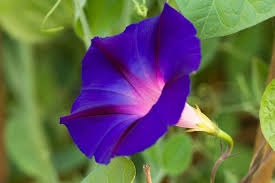

Creepers are plants with weak stems that grow along the ground. It also grows around another plant, or up a
wall. It means extending stems or branches. They have very fragile stems that can neither stand erect nor
support all of its weight or in other words we can say Creeper is the type of plant that grows completely on the
ground.The stem is completely fragile and it is unable to stand erect and does not support the weight of the
plant. Small, tiny plants that grow close to the ground are considered to be creepers or creeping plants. They
are also referred to as procumbent plants.
Most of the true creepers are smaller plants. It seems to simply crawl "on their bellies" along the ground.
These usually make good ground covers. They are ground-hugging shrubs. These are valued for their evergreen
foliage and ability to curb erosion.
Examples include watermelon, strawberry, pumpkin and sweet potatoes.
Characteristics of Creepers
Creepers are weak-stemmed plants that grow along the ground.
They cannot stand upright or climb, even with support.
Have soft, green, and flexible stems that spread sidew
Often bear large fruits that grow close to the ground to avoid breaking the stem.
Grow well in open, sunny spaces where they can spread freely.
Their stems may root at points where they touch the soil, helping them spread further.

Uses of Creepers
Food
Watermelon, Pumpkin
Medicinal
Brahmi, Sweet potato
Ground Cover
Bottle gourd, Pumpkin
Decoration
Morning glory, Sweet potato vine
Animal Feed
Soft leafy creepers
Fun Facts About Creepers
Creepers grow along the ground because their stems are too weak to stand upright or climb.
Watermelon, one of the biggest fruits, is a creeper — that’s why it grows close to the ground!
Bottle gourd and cucumber are creepers that give us healthy, water-rich vegetables.
Creepers help protect the soil by covering it completely — nature’s own ground carpet!